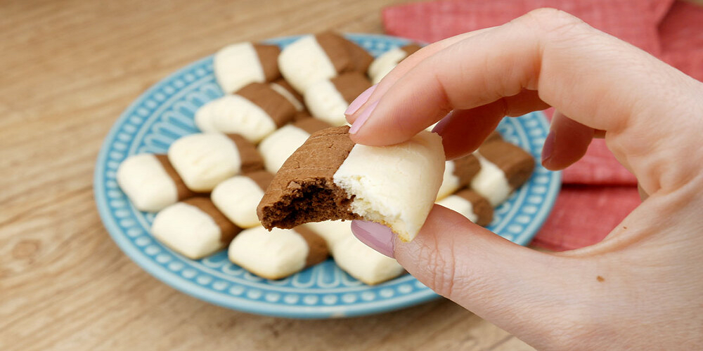

Sequilhos de Chocolate e Leite Ninho

Um biscoito delicado e irresistível, que derrete na boca a cada mordida. Os sequilhos de chocolate e leite ninho combinam o sabor intenso do chocolate com a suavidade do leite ninho, criando uma explosão de sabores em uma receita simples e perfeita para qualquer momento. Uma opção deliciosa para acompanhar um café ou presentear alguém especial.
Tempo de preparo
- Total: Aproximadamente 55 minutos
- Preparo: 35 minutos
- Cozimento: 20 minutos
Ingredientes
- 300g de amido de milho
- 1/2 caixinha de leite condensado
- 4 colheres de sopa rasas de manteiga
- 3 colheres de sopa de leite em pó
- 3 colheres de sopa de chocolate 50% ou achocolatado
Modo de Preparo
- Coloque o leite condensado e a manteiga em uma tigela e misture.
- Acrescente, gradualmente, o amido de milho e misture até atingir uma massa homogênea.
- Divida a massa em 2 partes e coloque-as em recipientes diferentes.
- Em uma, adicione o chocolate em pó; e na outra, o leite Ninho. Misture com as mãos, para que os ingredientes se incorporem, até as massas ficarem lisas.
- Transfira as massas para uma bancada, enrole-as, e divida cada uma em 4 partes iguais
- Pegue uma parte de cada uma das massas, faça mais um rolinho, e coloque-os lado a lado
- Grude um rolinho ao outro e corte-os em partes iguais. Repita o processo com as outras partes da massa
- Transfira os sequilhos para uma assadeira e faça marquinhas nos sequilhos com a ajuda de um garfo.
- Asse-as em forno pré-aquecido a 180º graus por cerca de 20 minutos